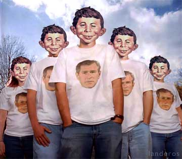

|

The S Factor
Explaining Bush's popularity.
- - - - - - - - - -
by Neal Starkman
 ILLIONS OF WORDS have been written as to the motivations of voters. Particularly in close elections, as in the 2000 presidential contest, pundits and laypeople alike have speculated on why people voted for whom. The exit poll has been a major tool in this speculation. ILLIONS OF WORDS have been written as to the motivations of voters. Particularly in close elections, as in the 2000 presidential contest, pundits and laypeople alike have speculated on why people voted for whom. The exit poll has been a major tool in this speculation.
But the speculation misses the mark by far. It's increasingly obvious, for example, that none of the so-called theories can explain President Bush's popularity, such as it is. Even at this date in his presidency, after all that has happened, the president's popularity hovers at around 50 percent -- an astonishingly high figure, I believe, given the state of people's lives now as opposed to four years ago.
What can explain his popularity? Can that many people be enamored of what he has accomplished in Iraq? Of how he has fortified our constitutional freedoms with the USA Patriot Act? Of how he has bolstered our economy? Of how he has protected our environment? Perhaps they've been impressed with the president's personal integrity and the articulation of his grand vision for America?
Is that likely?
Granted, there are certain subsections of the American polity that have substantially benefited from this presidency. Millionaires and charismatic Christians have accrued either material or spiritual fortification from Bush's administration. But surely these two groups are a small minority of the population. What, then, can account for so many people being so supportive of the president?
The answer, I'm afraid, is the factor that dare not speak its name. It's the factor that no one talks about. The pollsters don't ask it, the media don't report it, the voters don't discuss it.
I, however, will blare out its name so that at last people can address the issue and perhaps adopt strategies to overcome it.
It's the "Stupid factor," the S factor: Some people -- sometimes through no fault of their own -- are just not very bright.
It's not merely that some people are insufficiently intelligent to grasp the nuances of foreign policy, of constitutional law, of macroeconomics or of the variegated interplay of humans and the environment. These aren't the people I'm referring to. The people I'm referring to cannot understand the phenomenon of cause and effect. They're perplexed by issues comprising more than two sides. They don't have the wherewithal to expand the sources of their information. And above all -- far above all -- they don't think.
You know these people; they're all around you (they're not you, else you would not be reading this article this far). They're the ones who keep the puerile shows on TV, who appear as regular recipients of the Darwin Awards, who raise our insurance rates by doing dumb things, who generally make life much more miserable for all of us than it ought to be. Sad to say, they comprise a substantial minority -- perhaps even a majority -- of the populace.
Politicians have been aware of this forever; they cater to these people. They offer simplistic solutions to complex problems. They evade directed questions with non-sequiturs. They offer meaningless, jingoistic pap instead of thoughtful policy. And these people, the "S" people, eat it all up with a ladle.
I don't have a solution to this problem. To claim I did would belie my previous arguments. But I do have some modest suggestions that might provide a start for discussion: an intelligence test to earn the right to vote; a three-significantly-stupid-behaviors-and-you're-out law; fines for politicians who pander to the lowest common denominator and deportation of media representatives who perpetuate such actions.
It's well past time that people confront this issue, no matter who's offended. We are on the way to becoming a nation of imbeciles. I'm certain that a plethora of "George W. Bush" jokes is already being circulated in every capital of the world. We can stop this sapping of our national integrity but we must do it soon, lest the morons become the norm and those of us who use our brains for more than memorizing advertising jingles are ourselves ostracized from society.
Let's start talking. Let's bring the S factor out of the closet and into the daylight where we can all see it, gulp at its hideousness and finally make serious attempts to bring it to bay.
Reprinted from The Seatle Post Intelligencer

|